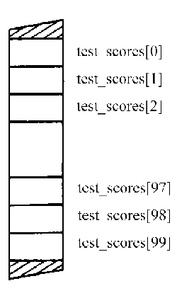

Как вы уже знаете, ваши программы во время выполнения хранят информацию в переменных. До сих пор каждая переменная в программе хранила только одно значение в каждый момент времени. Однако в большинстве случаев программам необходимо хранить множество значений, например 50 тестовых очков, 100 названий книг или 1000 имен файлов. Если вашим программам необходимо хранить несколько значений, они должны использовать специальную структуру данных, называемую массивом. Для объявления массива необходимо указать имя, тип массива и количество значений, которые массив будет хранить. Этот урок описывает, как программы объявляют массивы, а затем сохраняют и обращаются к информации, содержащейся в массиве. К концу данного урока вы освоите следующие основные концепции:
Программы на C++ широко используют массивы. Когда в уроке 17 вы начнете работать с символьными строками (например, название книги, имя файла и т. д.), вы будете оперировать массивами символов.
Массив представляет собой переменную, способную хранить одно или несколько значений. Подобно переменным, используемым вашими программами до сих пор, массив должен иметь тип (например, inl, char или float) и уникальное имя. В дополнение к этому вам следует указать количество значений, которые массив будет хранить. Все сохраняемые в массиве значения должны быть одного и того же типа. Другими словами, ваша программа не может поместить значения типа float, char и long в один и тот же массив. Следующее объявление создает массив с именем test_scores, который может вмещать 100 целых значений для тестовых очков:
———————————————— Тип массива
int test_scores[100]; //------> Размер массива
Когда компилятор C++ встречает объявление этой переменной, он распределит достаточно памяти для хранения 100 значений типа int. Значения, хранящиеся в массиве, называются элементами массива.
Массивы хранят несколько значений одного и того же типа
По мере усложнения вашим программам потребуется работать с несколькими значениями одного и того же типа. Например, программы могут хранить возраст 100 служащих или стоимость 25 акций. Вместо того чтобы заставлять программу работать со 100 или с 25 переменными с уникальными именами, C++ позволяет вам определить одну переменную — массив —, которая может хранить несколько связанных значений.
Для объявления массива вы должны указать тип и уникальное имя массива, а также количество элементов, которые будет содержать массив. Например, следующие операторы объявляют три разных массива:
float part_cost[50];
int employee_age[100];
float stock_prices[25];
Как вы уже знаете, массив позволяет вашим программам хранить несколько значений в одной и той же переменной. Для обращения к определенным значениям, хранящимся в массиве, используйте значение индекса, которое указывает на требуемый элемент. Например, для обращения к первому элементу массива test_scores вы должны использовать значение индекса 0. Для обращения ко второму элементу используйте индекс 1. Подобно этому, для обращения к третьему элементу используйте индекс 2. Как показано на рис. 16.1, первый элемент массива всегда имеет индекс 0, а значение индекса последнего элемента на единицу меньше размера массива:

Рис. 16.1. Как C++ индексирует элементы массива.
Важно помнить, что C++ всегда использует 0 для индекса первого элемента массива, а индекс последнего элемента на единицу меньше размера массива. Следующая программа ARRAY. CPP создает массив с именем values, который вмещает пять целочисленных значений. Далее программа присваивает элементам значения 100, 200, 300, 400 и 500:
#include <iostream.h>
void main(void)
{
int values[5]; // Объявление массива
values[0] = 100;
values[1] = 200;
values[2] = 300;
values[3] = 400;
values [4] = 500;
cout << "Массив содержит следующие значения" << endl;
cout << values [0] << ' ' << values [1] << ' ' << values [2] << ' ' << values [3] << ' ' << values [4] << endl;
}
Как видите, программа присваивает первое значение элементу 0 (values[0]). Она также присваивает последнее значение элементу 4 (размер Массива (5) минус 1).
Использование индекса для обращения к элементам массива
Массив позволяет вашим программам хранить несколько значений внутри одной и той же переменной. Для обращения к определенному значению внутри массива программы используют индекс. Говоря кратко, значение индекса указывает требуемый элемент массива. Все массивы C++ начинаются с элемента с индексом 0. Например, следующий оператор присваивает значение 100 первому элементу массива с именем scores:
scores[0] = 100;
Когда ваша программа объявляет массив, она указывает количество элементов, которые массив может хранить. Например, следующий оператор объявляет массив, способный хранить 100 значений типа int.
int scores[100];
В данном случае массив представляет собой элементы от scores[0] до scores[99].
Если ваши программы используют массив, обычной операцией является использование индексной переменной для обращения к элементам массива. Например, предположим, что переменная / содержит значение 3, следующий оператор присваивает значение 400 элементу values[3J:
values[i] = 400;
Следующая программа SHOWARRA.CPP использует индексную переменную i внутри цикла for для вывода элементов массива. Цикл for инициализирует i нулем, так что программа может обращаться к элементу values[O]. Цикл for завершается, когда i больше 4 (последний элемент массива):
#include <iostream.h>
void main (void)
{
int values[5]; // Объявление массива int i;
values[0] = 100;
values[1] = 200;
values[2] = 300;
values[3] = 400;
values[4] = 500;
cout << "Массив содержит следующие значения" << endl;
for (i = 0; i < 5; i++) cout << values [i] << ' ';
}
Каждый раз, когда цикл for увеличивает переменную i, программа может обратиться к следующему элементу массива. Экспериментируйте с этой программой, изменяя цикл for следующим образом:
for (i = 4; i >= 0; i--) cout << values [i] << ' ';
В данном случае программа будет выводить элементы массива от большего к меньшему.
Как вы уже знаете, C++ позволяет вашим программам инициализировать переменные при объявлении. То же верно и для массивов. При объявлении массива вы можете указать первоначальные значения, поместив их между левой и правой фигурными скобками, следующими за знаком равенства. Например, следующий оператор инициализирует массив values:
int values[5] = { 100, 200, 300, 400, 500 };
Подобным образом следующее объявление инициализирует массив с плавающей точкой:
float salaries[3] = { 25000.00. 35000.00, 50000.00 };
Если вы не указываете первоначальное значение для какого-либо элемента массива, большинство компиляторов C++ будут инициализировать такой элемент нулем. Например, следующее объявление инициализирует первые три из пяти элементов массива:
int values[5] = { 100, 200, 300 };
Программа не инициализирует элементы values[3] и values[4]. В зависимости от вашего компилятора, эти элементы могут содержать значение 0. Если вы не указываете размер массива, который вы инициализируете при объявлении, C++ распределит достаточно памяти, чтобы вместить все определяемые элементы. Например, следующее объявление создает массив, способяый хранить четыре целочисленных значения:
int numbers[] = { 1, 2, 3, 4 };
Ващи программы будут передавать массивы в функции точно так же, как и любые другие переменные. Функция может инициализировать массив, прибавить к массиву значения или вывести элементы массива на экран. Когда вы передаете массив в функцию, вы должны указать тип массива. Нет необходимости указывать размер массива. Вместо этого вы передаете параметр например number_of_elements, который содержит количество элементов в массиве:
void some_function(int array[], int number_of_elements);
Следующая программа ARRAYFUN.CPP передает массивы в функцию show_array, которая использует цикл for для вывода значений массивов:
#include <iostream.h>
void show_array (int array [] , int number_of_elements)
{
int i;
for (i = 0; i < number_of_elements; i++) cout << array[i] << ' ';
cout << endl;
}void main(void)
{
int little_numbers[5] ={1,2,3,4,5};
int big_numbers[3] = { 1000, 2000, 3000 };
show_array(little_numbers, 5);
show_array(big_numbers, 3);
}
Как видите, программа просто передает массив в функцию по имени, а также указывает параметр, который сообщает функции количество элементов, содержащихся в массиве:
show_array(little_numbers, 5);
Следующая программа GETARRAY.CPP использует функцию get_values, чтобы присвоить три значения массиву numbers:
#include <iostream.h>
void get_values(int array[], int number_of_elements)
{
int i;
for (i = 0; i < number_of_elements; i++){
cout “ "Введите значение " << i << ": ";
cin ” array [i];
}
}void main(void)
{
int numbers[3];
get_values(numbers, 3);
cout << "Значения массива" << endl;
for (int i = 0; i < 3; i++)
cout << numbers [i] << endl;
}
Как видите, программа передает массив в функцию по имени. Функция в свою очередь присваивает массиву элементы. Из урока 10 вы узнали, что, пока ваша программа не передаст параметры в функцию с помощью адреса, функция не может изменить эти параметры. Однако, как можно заметить в данном случае, функция get_values изменяет параметр-массив numbers. Как вы узнаете из урока 20, C++ действительно передает массивы в функцию, используя указатели. Таким образом, функция может изменить элементы массива, если ей это нужно.
Из этого урока вы узнали, что ваши программы могут хранить несколько значений одного и того же типа внутри массива. Программы на C++ широко используют массивы. Из урока 17 вы узнаете, что программы могут использовать массивы для хранения символьных строк. До изучения урока 17 убедитесь, что вы освоили следующие основные концепции:
- Массив представляет собой переменную, которая может хранить одно или несколько значений одного и того же типа.
- Для объявления массива вам следует указать тип, имя массива, а также количество значений, хранящихся в массиве.
- Значения внутри массива называются элементами массива.
- Первый элемент массива хранится как элемент 0 (array[OJ), индекс последнего элемента массива на единицу меньше размера массива.
- Программы часто используют индексные переменные для обращения к элементам массива.
- Если функция воспринимает массив как параметр, она должна указать тип и имя, но не размер массива.
- Если программа передает массив в функцию, она, как правило, передает и параметр, который сообщает функции количество элементов содержащихся в массиве.
- Так как C++ передает массив в функцию с помощью адреса массива функция может изменять значения, содержащиеся в массиве.
Предыдущий урок | Следующий урок